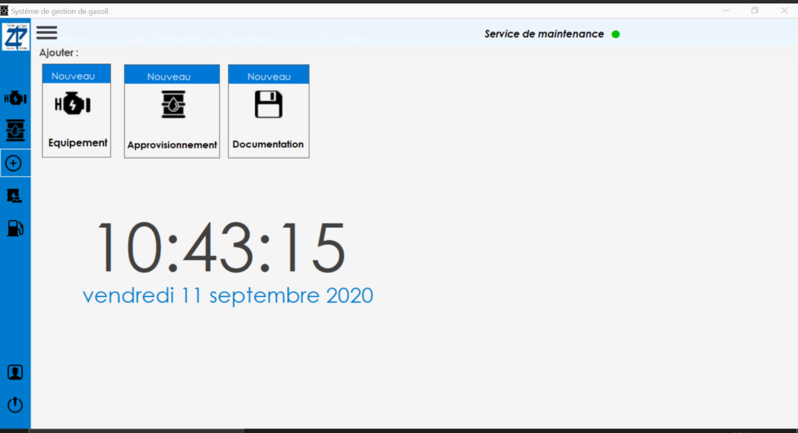
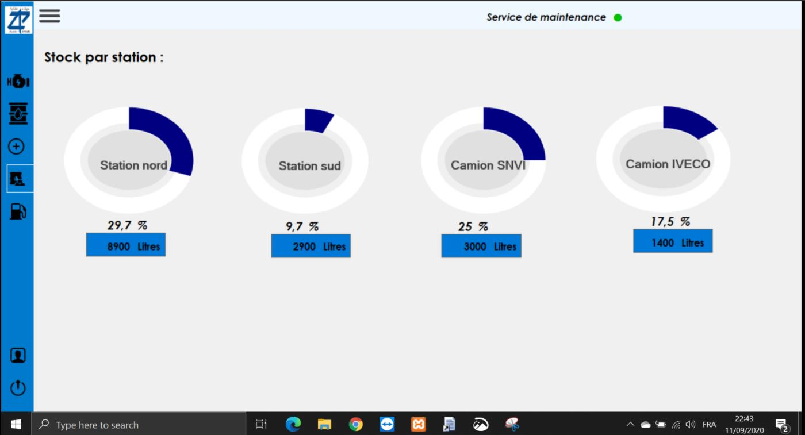
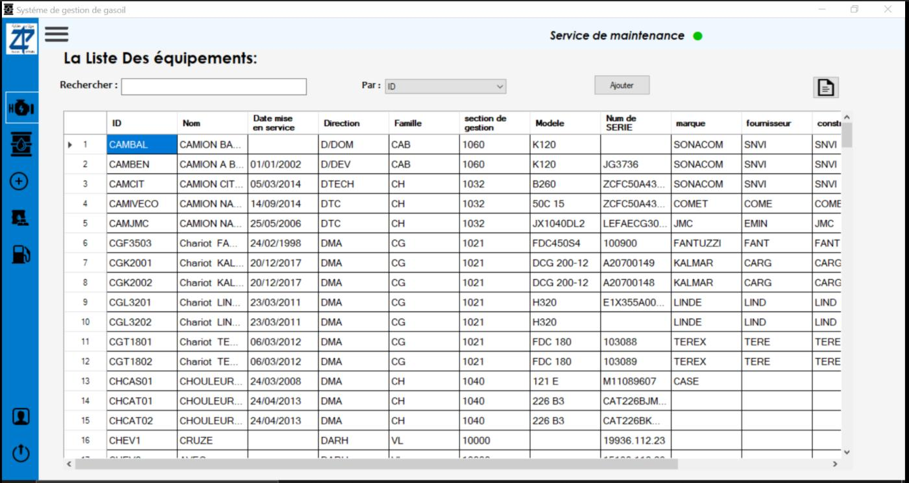
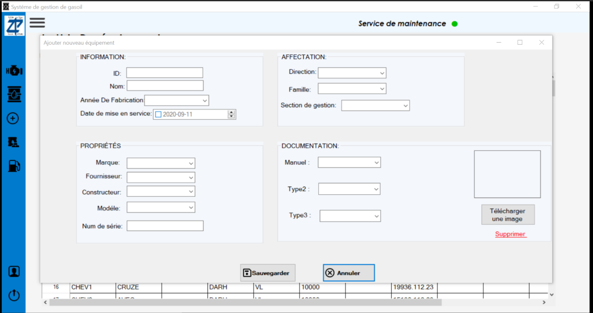
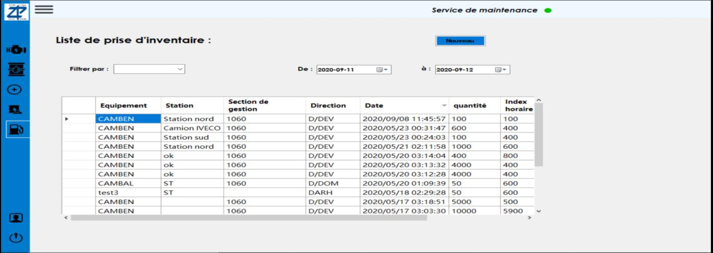
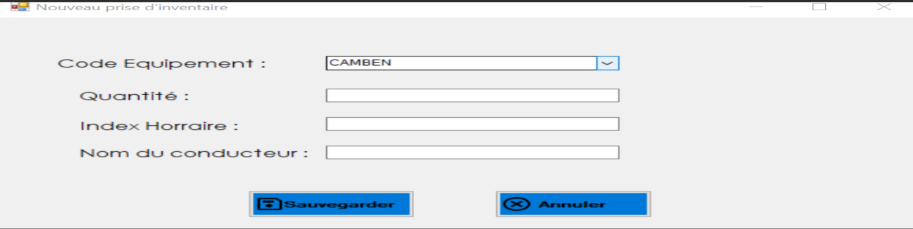
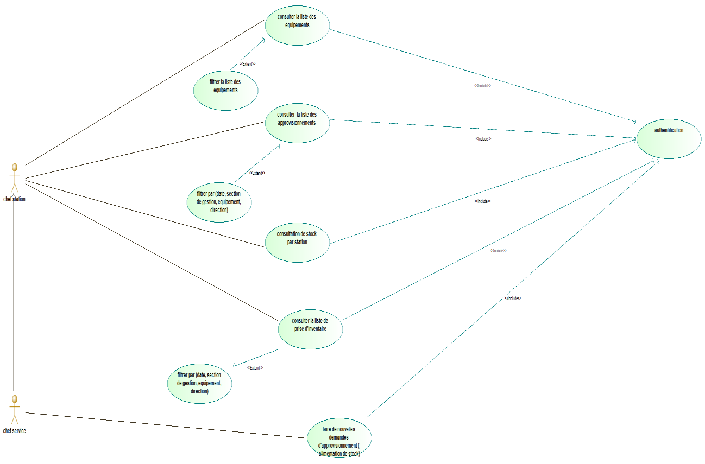
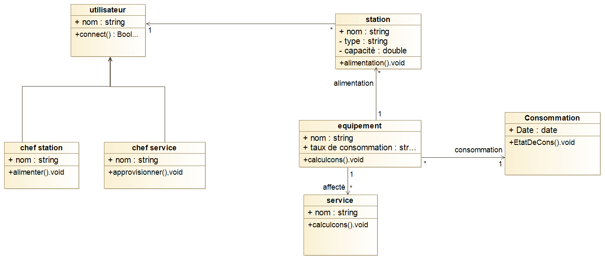

A final-year bachelor's project built in the real operating context of a port company (EPAN), centered on one core loop: every resupply is checked against the equipment's condition and mileage, triggering a preventive-maintenance recommendation backed by the technical documentation stored in the database.
Ein Bachelor-Abschlussprojekt im realen Betriebskontext eines Hafenunternehmens (EPAN), aufgebaut um einen zentralen Kreislauf: Jede Betankung wird gegen Zustand und Kilometerstand der Anlage geprüft und löst bei Bedarf eine Empfehlung zur vorbeugenden Wartung aus, gestützt auf die in der Datenbank hinterlegte technische Dokumentation.
Fuel and lubricant were tracked like ordinary warehouse stock, even though they cannot physically sit in one place: they are spread across fixed, mobile and floating distribution stations. Resupply, equipment mileage and condition were logged manually — slow, tedious and error-prone.
Kraftstoff und Schmierstoffe wurden wie gewöhnliche Lagerware behandelt, obwohl sie physisch nicht an einem Ort gelagert werden können: Sie sind auf feste, mobile und schwimmende Verteilstationen verteilt. Betankung, Kilometerstand und Zustand der Anlagen wurden manuell erfasst — langsam, mühsam und fehleranfällig.
Each department had to report its resupply requests and floating-unit stock levels once a month, with no real-time visibility into actual fuel levels or equipment condition.
Jede Abteilung musste ihre Nachschubanfragen und Bestände der schwimmenden Einheiten einmal im Monat melden — ohne Echtzeit-Einblick in tatsächliche Kraftstoffstände oder den Zustand der Anlagen.
A desktop application built in C++ with Visual Studio, running on a MySQL database served through a local XAMPP (Apache/PHP) stack, for two user roles — department head ("chef service") and station manager ("chef station") — each with their own access rights. Every resupply, mileage reading and equipment record is written to a normalized 18-table schema instead of scattered spreadsheets.
Eine mit C++ und Visual Studio entwickelte Desktop-Anwendung auf einer MySQL-Datenbank, bereitgestellt über einen lokalen XAMPP-Stack (Apache/PHP), für zwei Nutzerrollen — Abteilungsleiter ("chef service") und Stationsleiter ("chef station") — jeweils mit eigenen Zugriffsrechten. Jede Betankung, jeder Kilometerstand und jeder Anlagen-Datensatz wird in ein normalisiertes 18-Tabellen-Schema geschrieben statt in verstreute Tabellenblätter.
Views and filters the equipment list, reviews and modifies resupply requests across all stations, and consults stock levels station by station.
Sieht und filtert die Anlagenliste, prüft und ändert Nachschubanfragen über alle Stationen hinweg und ruft die Bestände je Station ab.
Manages their own station's stock and inventory entries, submits new resupply requests, and records new inventory counts directly.
Verwaltet Bestand und Inventurerfassung der eigenen Station, stellt neue Nachschubanfragen und erfasst neue Inventurzählungen direkt.
Each time a vehicle is refueled, its recorded mileage and condition are checked against maintenance criteria. The system flags equipment that needs servicing and points to the technical documentation stored in the database for the intervention required.
Bei jeder Betankung werden erfasster Kilometerstand und Zustand gegen die Wartungskriterien geprüft. Das System markiert Anlagen mit Wartungsbedarf und verweist auf die in der Datenbank hinterlegte technische Dokumentation für den erforderlichen Eingriff.
Each equipment record carries manufacturer, model, serial number, department and family, filterable by name, family or management section.
Jeder Anlagendatensatz enthält Hersteller, Modell, Seriennummer, Abteilung und Familie, filterbar nach Name, Familie oder Verwaltungsbereich.
Equipment, stations, suppliers, drivers, lubricants, resupply and inventory events are modeled as distinct, related entities rather than flat spreadsheet rows.
Anlagen, Stationen, Lieferanten, Fahrer, Schmierstoffe, Betankungen und Inventurereignisse sind als eigenständige, verknüpfte Entitäten modelliert statt als flache Tabellenzeilen.
Design followed a full UML modeling pass with Modelio, in this order: data dictionary, use case diagram, class diagram, sequence diagrams for each key flow, and activity diagrams per role — before any implementation.
Der Entwurf folgte einer vollständigen UML-Modellierung mit Modelio, in dieser Reihenfolge: Datenwörterbuch, Anwendungsfalldiagramm, Klassendiagramm, Sequenzdiagramme für jeden zentralen Ablauf sowie Aktivitätsdiagramme je Rolle — vor jeder Implementierung.








| LanguageSprache | C++ |
| EnvironmentUmgebung | Visual Studio |
| DatabaseDatenbank | MySQL |
| Local serverLokaler Server | XAMPP (Apache / PHP) |
| ModelingModellierung | UML — Modelio |
| ScopeUmfang | 18-table schema, 2 user roles18-Tabellen-Schema, 2 Nutzerrollen |
Happy to walk through the data model, the UML design process or the role-based access logic.
Gerne erläutere ich das Datenmodell, den UML-Entwurfsprozess oder die rollenbasierte Zugriffslogik.